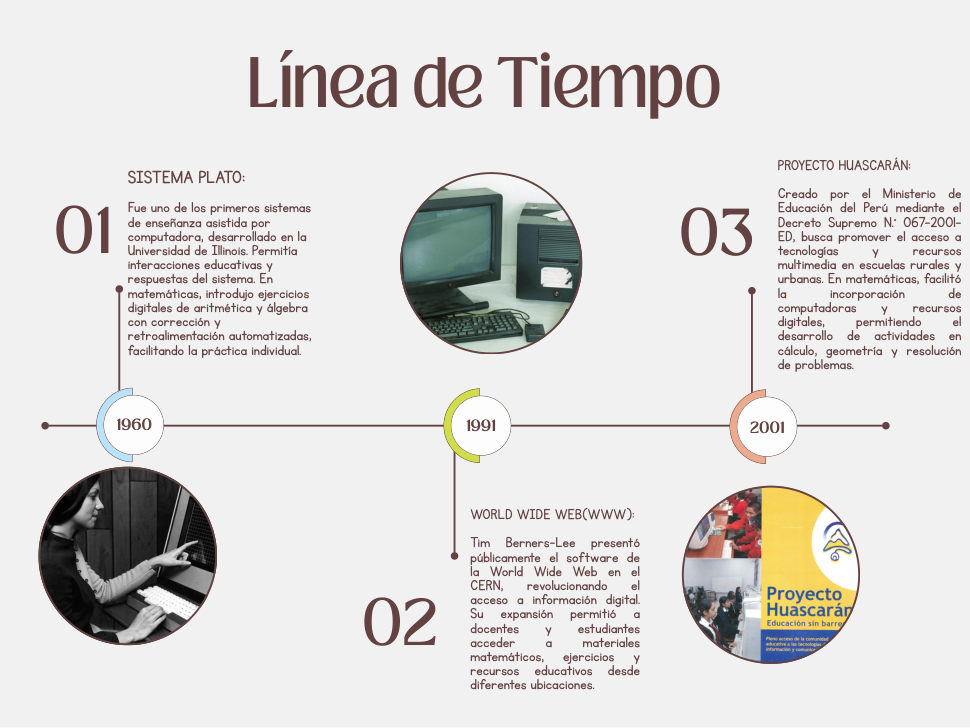
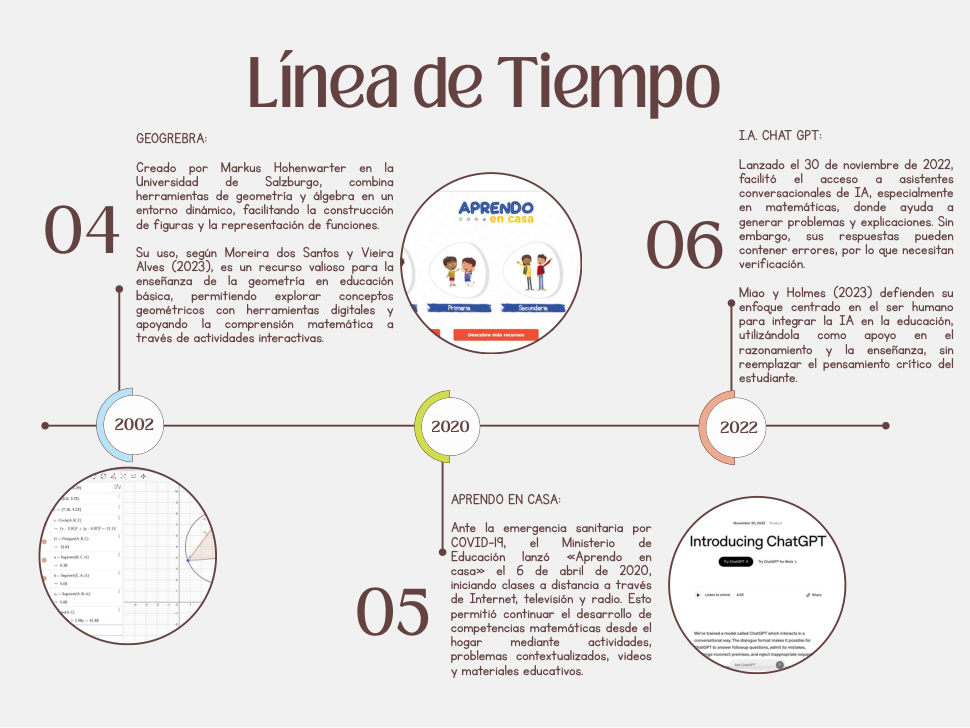

La evidencia reúne hitos tecnológicos y su relación con las actividades matemáticas, el acceso a recursos, la retroalimentación y el aprendizaje a distancia.
Sistema PLATO
Uno de los primeros sistemas de enseñanza asistida por computadora; permitía actividades interactivas, ejercicios y corrección automática en aritmética y álgebra.
World Wide Web
Facilitó progresivamente el acceso a recursos digitales, materiales, explicaciones y ejercicios matemáticos en línea.
Proyecto Huascarán (Perú)
Promovió el uso de computadoras, Internet y materiales multimedia en escuelas peruanas, incluidos recursos para cálculo y geometría.
GeoGebra
Herramienta de geometría y álgebra dinámica; su historia aparece en la continuación visual de la línea de tiempo del archivo.
Aprendo en casa
Permitió continuar actividades educativas mediante Internet, televisión y radio durante la emergencia sanitaria.
ChatGPT
Asistente de IA capaz de generar explicaciones y preguntas; el material advierte que sus respuestas deben verificarse y no reemplazar el pensamiento crítico.


Relación con la educación matemática
Los documentos describen el paso de ejercicios asistidos por computadora al acceso a recursos en red, la continuidad educativa a distancia y la exploración interactiva o asistida por inteligencia artificial. La función del docente sigue siendo orientar y verificar el aprendizaje.